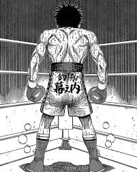

“Você não deve ceder ao desespero. Se você se permitir ir por essa estrada, vai se render aos seus instintos mais baixos. Em épocas sombrias, temos que nos dar esperança. Esse é o sentido da força interior.” Tio Iroh
“Você deve deixar o passado ir, para dar espaço ao futuro" Tio Iroh
“A vida fica melhor quando você dexia a pressão de ser perfrito de lado" Tio Iroh
“You think it's this easy, Robert? You think it's a simple answer. It's, it's not. It's never what you think it is. In the end, what matters? Nothing, right? So you make it for yourself" Marcus the Worm
“Apparently is not legal to launder $17.000 through a localy owned Greek restaurant" Marcus the Worm
“Not everyone who works hard is rewarded. But! All those who succeed have worked hard!" Kamogawa
Takamura-san, what does it mean to be strong? How it feel to be strong?Ippo Makunouchi
“Sometimes, no matter what kin of effort you put in, it just doesn't really pay off" Kamogawa

“Você não perde quando é derrotado, você perde quando desiste" Vegeta
“Eu sou o principe dos sayajins e meu orgulho é grande mesmo que você controle meu corpo e minha mente, eu não obedecerei as ordens que você me der" Vegeta
“Você pode destruir planetas, mas nunca destruirá o que eu sou" Goku
“A sorte desce igualmente apenas sobre aqueles que estão verdadeiramente preparados para lutar." Jinpachi Ego
“Não é uma questão de fazer a escolha certa... eu farei com que o caminho que eu escolher seja o certo." Meguru Bachira
"As desculpas são invenções de cérebros minúsculos que distorcem a realidade para ajusta-la"Jinpachi Ego
"What is better? To be born good, or to overcome your evil nature through great effort?" Paarthurnax - The Elder Scrolls V, Skyrim
"There are many hungers it is better to deny than to feed. Discipline against the lesser aids in denial of the greater."Paarthurnax - The Elder Scrolls V, Skyrim
"I am whatever the people need me to be. A guardian. An oppressor. For some, too distant. For others, too meddlesome. I am the canvas upon which they paint their dreams and resentments. A vessel for their hopes and doubts. A mirror. Nothing more."Sotha Sil - The Elder Scrolls Online, Clockwork City
"War... war never changes."Fallout 1
"I survived because the fire inside me burned brighter than the fire around me."Joshua Graham - Fallout New Vegas
"It’s said that war, war never changes. But men do, through the roads they walk. And this road has reached its end."Ulysses - Fallout New Vegas
"All lives touch other lives to create something anew and alive."Pokémon Diamond, Pearl e Platinum
"You said you have a dream… That dream… Make it come true! Wonderful dreams and ideals give you the power to change the world! If anyone can, it's you! Well, then… Farewell!"N - Pokémon Black e White
"I see now that the circumstances of one's birth are irrelevant. It is what you do with the gift of life that determines who you are."Mewtwo - Pokémon, O Filme
"O amor é a maldição mais perversa de todas."Satoru Gojo
"Você é o mais forte porque é Satoru Gojo, ou você é Satoru Gojo porque é o mais forte?"Suguru Geto
"Não sei como me sentirei quando morrer, mas não quero me arrepender da maneira como vivi."Yuji Itadori
"The blood on your hands is something you won't lose All you can choose is whose"Zeus
"I will fall in love with you Over and over again I don't care how, where or when No matter how long it's been, you're mine Don't tell me you're not the same person You're always my husband And I've been waiting, waiting"Penelope
"I know life and fate are scaryBut I wanna be legendaryTelêmaco